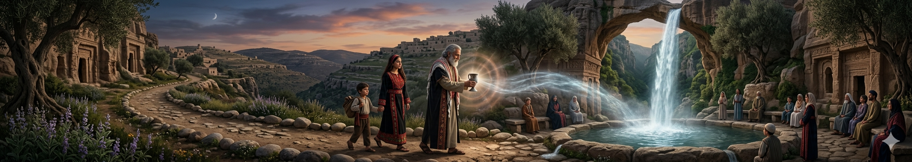
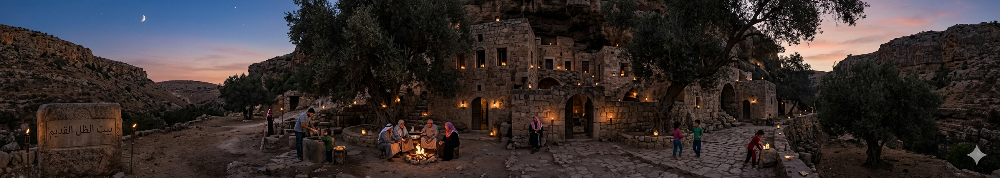

"في كل حكاية.. فلسطين"

أسطورة عين الماء التي تختار الناس
كان في رام الله نبع ماء يقصده الناس للشرب. ويُقال إن النبع “يختار” من يشرب منه؛ فبعض الناس يشعرون براحة وطمأنينة بعد الشرب، بينما آخرون يشعرون بالتعب دون سبب. لذلك كان الأهالي يقولون إن الماء “يعرف القلوب”.
أسطورة ضباب الجبل الحارس
يُحكى أن جبال رام الله لا يغطيها الضباب صدفة، بل لأن “روح الجبل” تستر المدينة كلما حلّ الليل. كان الناس يقولون إن الضباب يتحرك كأنه كائن حي، وإذا كان كثيفًا جدًا فهذا يعني أن الجبل يحمي المدينة من أمرٍ ما. لذلك كان كبار السن يعتبرون الضباب علامة أمان وليس خوفًا.

أسطورة بيت الظل القديم
في أطراف المدينة القديمة، كان يوجد بيت مهجور لا يجرؤ أحد على دخوله بعد الغروب. كان البعض يقول إن ظلًا يتحرك داخله رغم أنه فارغ. وإذا مرّ أحد بجانبه ليلًا، يسمع صوت خطوات داخل البيت ثم يصمت فجأة. ومع الوقت، صار الناس يعتقدون أن البيت “لا يعيش وحده”.
أسطورة شجرة البلوط التي تتكلمة
في أحد التلال، كانت هناك شجرة بلوط ضخمة جدًا. كان الرعاة يقسمون أنهم أحيانًا يسمعون “أنينًا خفيفًا” عندما تهب الرياح بين أغصانها، وكأن الشجرة تحكي قصصًا قديمة عن المدينة. لذلك كان الناس يجلسون تحتها طلبًا للسكينة والتأمل.